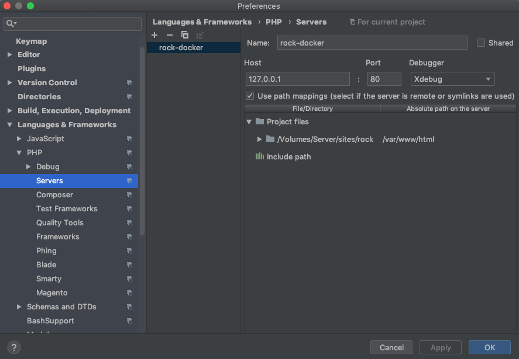
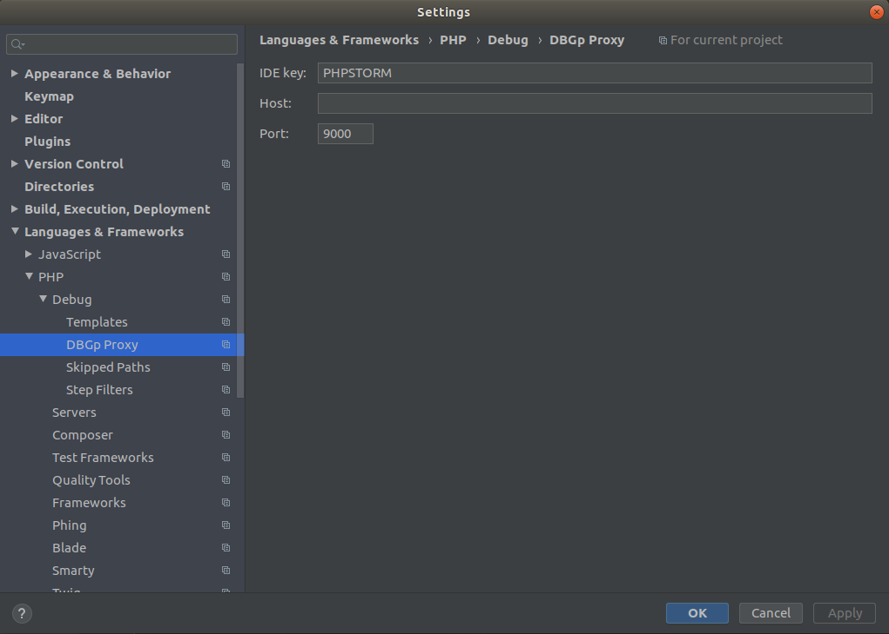

Xdebug Support
There are two docker containers running FPM, php-fpm, php-debug. The php-debug container has the Xdebug extension pre-installed. Nginx will automatically route requests to the php-debug container when the XDEBUG_SESSION cookie has been set to PHPSTORM via the Xdebug Helper browser extension.
Xdebug will automatically connect back to the host machine on port 9000 for xdebug2 and 9003 for xdebug3 for each request routed to the php-debug container (i.e. when the XDEBUG_SESSION cookie is set). When configuring Xdebug Helper in your browser, make sure it is setting this cookie with the value PHPSTORM.
If you use a firewall, allow connection to port 9000 for xdebug2 and 9003 for xdebug3.
In similar fashion to the warden shell command there is also a debug command to launch into an xdebug enabled container shell for debugging CLI workflows:
warden debug
VSCode
To configure a project in VSCode for debugging, add the following to .vscode/launch.json in the project directory:
{
"version": "0.2.0",
"configurations": [
{
"name": "Listen for XDebug",
"type": "php",
"request": "launch",
"port": 9003,
"pathMappings": {
"/var/www/html": "${workspaceRoot}"
}
}
]
}
Note
If your project has (for example) ``WARDEN_WEB_ROOT=/webroot`` in it's ``.env`` file, to mount ``webroot/`` to ``/var/www/html`` rather than the top-level project directory, you may need to set the ``pathMapping`` above to ``${workspaceRoot}/webroot`` for the mapping to function correctly.
Once this configuration is in place, make sure you have the PHP Debug extension by Felix Becker installed. This is required for Xdebug support to function in VSCode. Additional information on launch settings specific to Xdebug use in VSCode may be found here.
To learn more about debugging in VSCode, please go here.
PhpStorm
When it receives the first request, PHP Storm should prompt you if the “Server” configuration is missing. The below image demonstrates how this is setup; the important settings are these:
Name:
clnt-docker(this is the value of theWARDEN_ENV_NAMEvariable in the.envfile appended with a-dockersuffix)Host:
127.0.0.1Port:
80Debugger: Xdebug
Use path mappings must be enabled, with a mapping to map the project root on the host to
/var/www/htmlwithin the container.

Additional configurations may be required, such as configuring DBGp Proxy port.
